Torrent With A VPN - Guide
All projects made by LiamBox are for educational purposes only.
You can always send me feedback in the repository.
All links open a new tab so you don't have to middle-click every link.
Content
- Introducing Piracy
- What is Piracy?
- Is Piracy legal?
- Is Piracy morally correct?
- Torrenting And Torrent Clients
- What is torrenting?
- What is a torrent client?
- Is torrenting legal?
- Is torrenting safe?
- There is malware in PDFs
- Example of a small YouTube channel
- Example of a big YouTube channel
- Dangers of cracked software
- Common torrent terms
- Virtual Private Network (VPN)
- What is a VPN?
- Are VPNs legal and safe?
- Can I "pirate" or use a free VPN?
- What if I don't use a VPN?
- [In most 1st world countries]
- [In Germany or similar]
- Too long; Didn't read
- Best Software & Services To Use
- Best operating system?
- Best torrent client?
- Best VPNs?
- Bind Torrent Client With VPN
- Ensure Torrent Client Is Bound With VPN
- Get Started With Piracy
- Piracy websites
- Websites to prove you are torrenting safely
- Miscellaneous
- Piracy Memes
Introducing Piracy
What is Piracy?
In the digital world, it is "the practice of downloading or distributing copyrighted content without permission". Popular types of media including movies, music, software, video games and audiobooks are uploaded and downloaded every day.
Is Piracy legal?
No. According to the FBI, piracy is "punishable by up to 5 years in federal prison and a fine of $250,000".
Is Piracy morally correct?
Depends on the company or business. It is a great punishment to fight against bad business practices that only affect consumers or when a service is a monopoly that doesn't care about its consumers at all.
- Netflix hates password sharing now. Netflix has reduced piracy because of their convenient service, now they are losing subscribers.
- Nintendo makes their consumers pay for awful online multiplayer. Even the Wii and the WiiU had better services and online multiplayer than the Switch ever will in decades.
- There are many more examples but that might get me in trouble.
What is Piracy?
In the digital world, it is "the practice of downloading or distributing copyrighted content without permission". Popular types of media including movies, music, software, video games and audiobooks are uploaded and downloaded every day.
Is Piracy legal?
No. According to the FBI, piracy is "punishable by up to 5 years in federal prison and a fine of $250,000".
Is Piracy morally correct?
Depends on the company or business. It is a great punishment to fight against bad business practices that only affect consumers or when a service is a monopoly that doesn't care about its consumers at all.
- Netflix hates password sharing now. Netflix has reduced piracy because of their convenient service, now they are losing subscribers.
- Nintendo makes their consumers pay for awful online multiplayer. Even the Wii and the WiiU had better services and online multiplayer than the Switch ever will in decades.
- There are many more examples but that might get me in trouble.
Torrenting and torrent clients
What is torrenting?
Torrenting is The act of downloading and sharing files through the BiTorrent protocol. A torrent file or magnet link contains the information that is needed for the torrent client to locate and downloand the files from the users who are sharing them.
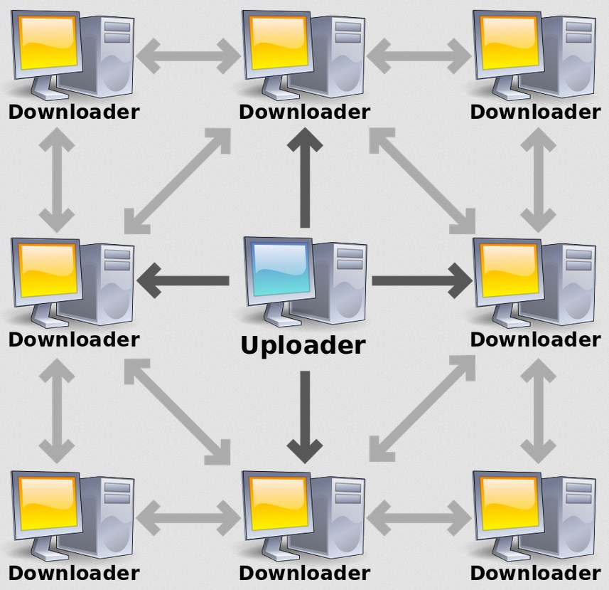
What is a torrent client?
A torrent client is a software used to downloand and distribute content by using the BiTorrent protocol, the most efficient peer-to-peer (P2P) file sharing protocol. This type of downloanding and sharing files is very effective, as they are shared with other people's computers and smartphones, and cannot be shut down by governments and copyright holders unless all devices sharing the files are powered off.
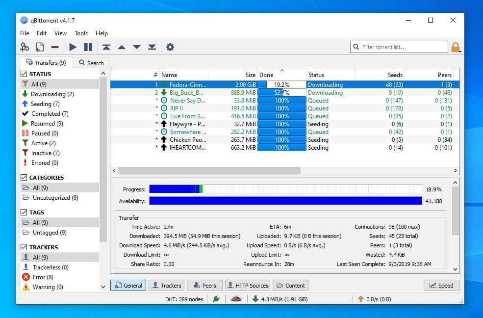
qBittorrent is an open-source BiTorrent client that is lightweight and simple.
Is torrenting legal?
Yes, you can use your torrent client to downloand and share files that are not protected by copyright law or are not illegal or malicious. Many open-source projects take advantage of this to distribute their software without the need to pay for a server and instead ask the community to share it.
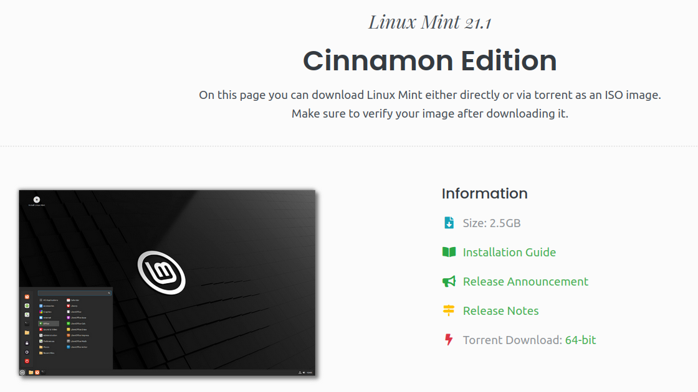
Linux Mint is an open-source operating system that is free as in freedom or libre.
Is torrenting safe?
Downloading and sharing files are safe if you never open them, but you need to be very careful about the files that you open. It's true that "non-executables cannot contain malware because they are not executables, so opening music and video files are safe", but this is WRONG! Here's why people are hacked with PDF files.
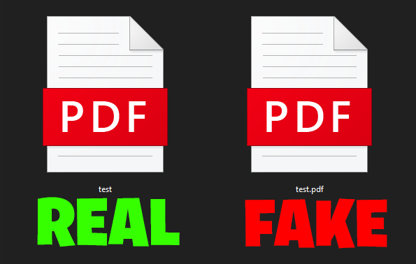
There is malware in PDFs!
A Twitter user called Serpent Explains how a PDF files can be disguised as a malicious file and can lead to a wide range of losses like getting all of your accounts stolen, losing all of your cryptocurrency and NFTs from hot wallets like Metamask.
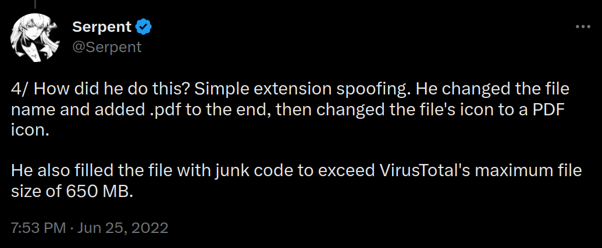
Example of a small YouTube channel
The Bread Pirate got hacked because he opened an SCR file (malware) disguised as a PDF file (harmless). (Click the channel name or start at 1:17)
Example of a big YouTube channel
Linus Tech Tips also got hacked because one of their employees opened a PDF that didn't work. (Click the channel name or start at 5:09)
Dangers of cracked software
Unless you know how to use it in secured virtual machines, there is no way to know if it's safe for your computer or smartphone.
Cracked software could have a trojan that stores all malware that is released after opening the installer or executable, here's some examples:
- Ransomware encrypts your files until you pay with your money or forever.
- Crypto Miners make a profit from your electricity, CPU and GPU.
- Becoming part of a Botnet that may be used in DDOS attacks.
- Keyloggers steal your passwords and private information.
**LAST WARNING: Install cracked software at your own risk! You can also consider open-source projects in GitHub**
Common torrent terms
- BiTorrent: A communication protocol for peer-to-peer file sharing.
- Torrent: A file containing metadata about the files and folders to be shared.
- Magnet Link: A link to identify and locate files.
- Peerer: User who is downloading the file.
- Seeder: User who is sharing the file to the peer.
- Leecher: User is downloading the file but never shares.
- Swarm: Group of people downloading and sharing a file.
- Tracker: Server that tracks connected users in a torrent.
What is torrenting?
Torrenting is The act of downloading and sharing files through the BiTorrent protocol. A torrent file or magnet link contains the information that is needed for the torrent client to locate and downloand the files from the users who are sharing them.
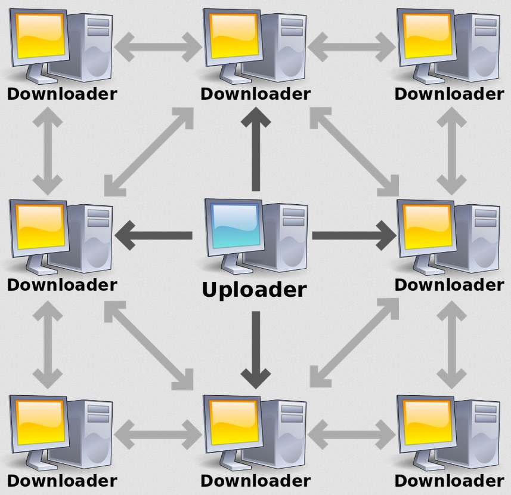What is a torrent client?
A torrent client is a software used to downloand and distribute content by using the BiTorrent protocol, the most efficient peer-to-peer (P2P) file sharing protocol. This type of downloanding and sharing files is very effective, as they are shared with other people's computers and smartphones, and cannot be shut down by governments and copyright holders unless all devices sharing the files are powered off.
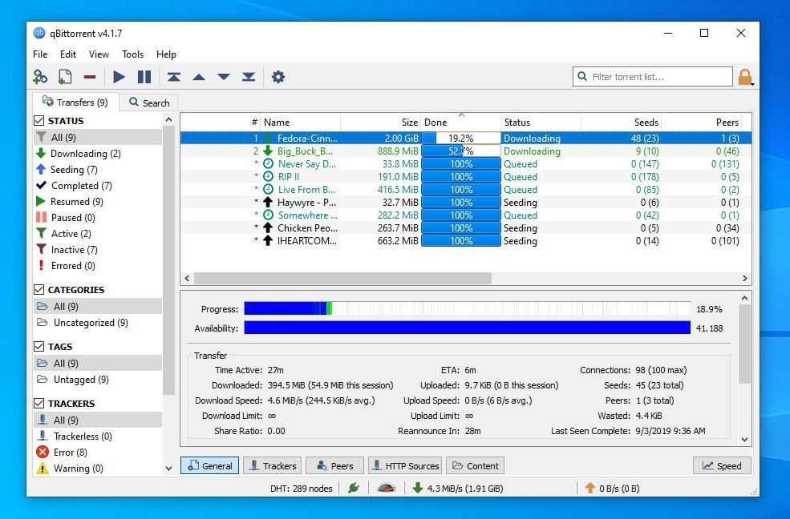qBittorrent is an open-source BiTorrent client that is lightweight and simple.
Is torrenting legal?
Yes, you can use your torrent client to downloand and share files that are not protected by copyright law or are not illegal or malicious. Many open-source projects take advantage of this to distribute their software without the need to pay for a server and instead ask the community to share it.
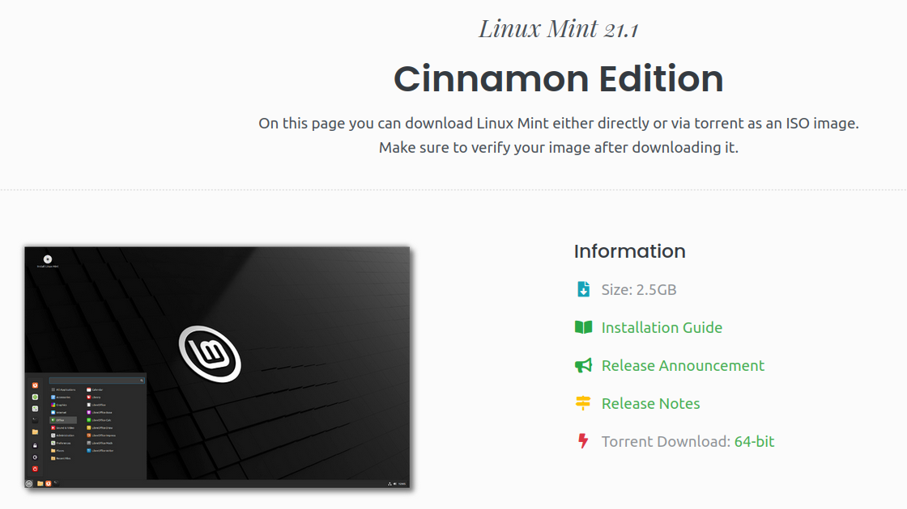Linux Mint is an open-source operating system that is free as in freedom or libre.
Is torrenting safe?
Downloading and sharing files are safe if you never open them, but you need to be very careful about the files that you open. It's true that "non-executables cannot contain malware because they are not executables, so opening music and video files are safe", but this is WRONG! Here's why people are hacked with PDF files.
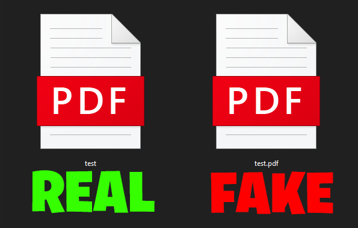There is malware in PDFs!
A Twitter user called Serpent Explains how a PDF files can be disguised as a malicious file and can lead to a wide range of losses like getting all of your accounts stolen, losing all of your cryptocurrency and NFTs from hot wallets like Metamask.
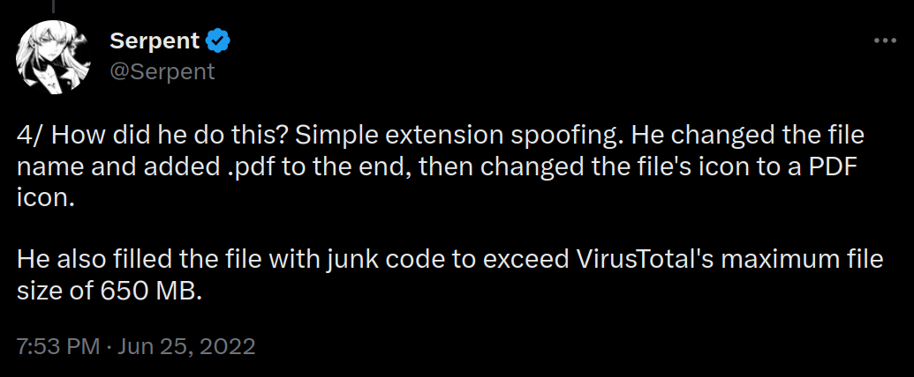Example of a small YouTube channel
The Bread Pirate got hacked because he opened an SCR file (malware) disguised as a PDF file (harmless). (Click the channel name or start at 1:17)
Example of a big YouTube channel
Linus Tech Tips also got hacked because one of their employees opened a PDF that didn't work. (Click the channel name or start at 5:09)
Dangers of cracked software
Unless you know how to use it in secured virtual machines, there is no way to know if it's safe for your computer or smartphone.
Cracked software could have a trojan that stores all malware that is released after opening the installer or executable, here's some examples:
- Ransomware encrypts your files until you pay with your money or forever.
- Crypto Miners make a profit from your electricity, CPU and GPU.
- Becoming part of a Botnet that may be used in DDOS attacks.
- Keyloggers steal your passwords and private information.
**LAST WARNING: Install cracked software at your own risk! You can also consider open-source projects in GitHub**
Common torrent terms
- BiTorrent: A communication protocol for peer-to-peer file sharing.
- Torrent: A file containing metadata about the files and folders to be shared.
- Magnet Link: A link to identify and locate files.
- Peerer: User who is downloading the file.
- Seeder: User who is sharing the file to the peer.
- Leecher: User is downloading the file but never shares.
- Swarm: Group of people downloading and sharing a file.
- Tracker: Server that tracks connected users in a torrent.
Virtual Private Network (VPN)
What is a VPN?
short for "Virtual Private Network", is a service and software that hides your IP address and makes you virtually untraceable from your Internet Service Provider (ISP), Goverment and Copyright Trolls. This is because all actions and connections are made in the VPN and are encrypted from your house or Cell Tower, So nobody expects your VPN provider can see what you are doing.
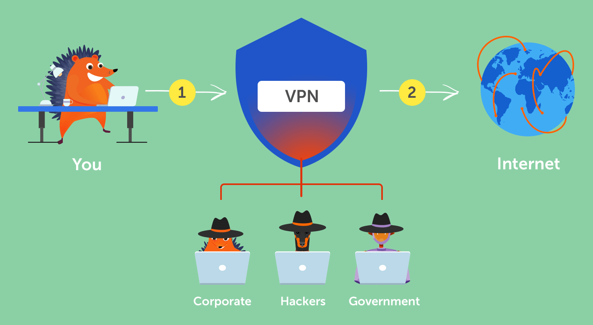Most VPN providers say they do not keep logs, it is up to you to decide if you can trust them while downloading or sharing torrents.
Are VPNs legal and safe?
Yes! VPNs have always been used by corporations and businesses for data protection, secure remote access secure communication and etc.
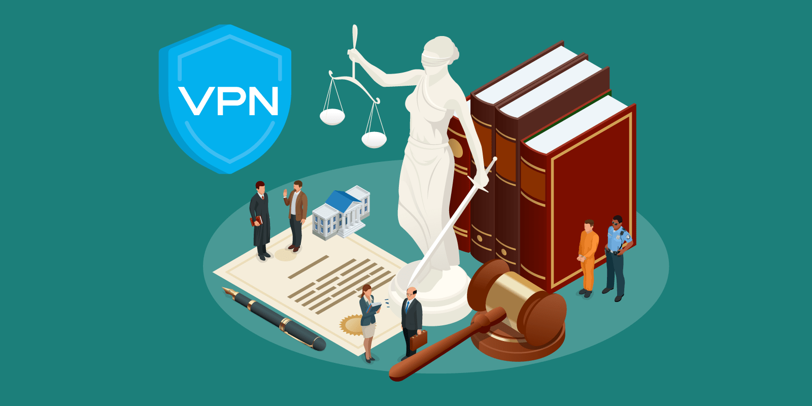Can I "pirate" or use a free VPN?
Pirating a VPN is idiotic, you can install all VPN software available, but you won't have access to the VPN servers, which means you can't connect to a VPN until you pay. Also, using free VPNs is being delusional, as those do keep all logs and you will still get in trouble with your ISP.
What if I don't use a VPN?
The copyright holder or copyright troll gets your IP address while you were torrenting (Seeding & Peering) and get in contact with your ISP and you receive a DMCA letter telling you to stop torrenting or a fine (You should probably never do this)
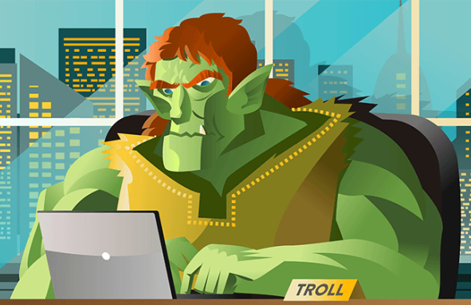[Most 1st world countries] According to Reddit user u/simplex0991:
"You'll be fine. The DMCA complaint issuer doesn't know who you are (unless you responded - don't ever respond). Only your ISP has connected the IP to you from their records. ToS differs between providers, but they usually will give you a 3-strikes buffer as they want to keep you as a customer (you give them money after all). Even at that, its uncommon to be fired as a customer so long as you space out your DMCA complaints so you aren't getting 3 in one year."
[Germany or similar] According to Reddit user u/spyfigure:
"If you are in Germany, nothing of the first paragraph applies. The lawyers have contacted the ISP, who gave them your details. This happens on the first infraction. The letter you get is including a C&D together with the lawyer invoice of €2000, the maximum allowed by law. You can try to ignore it or fight it, but with limited success. If they are thin in resources, it might happen that the statute of limitations' time runs out (2 years). You'll still get threatening letters from the lawyers in the meantime. This is automated, no manpower needed. If they drag you into court, they do it just before the statute of limitations comes into effect. Also, if they want to make an example, they'll do it. If they see that you have shitload of torrents on iknowwhatyoudownload.com, they are probably trying to punish you. Lesson: Never torrent without a properly protected VPN."
Too long; Didn't read
TLDR: Never torrent without a VPN that doesn't keep logs, or else you get your internet shutdown or a fine.
A lawyer (very expensive) is highly recommended if you wish to torrent copyrighted content without a VPN.
Best Software To Use
Best Operating System
GNU/Linux distributions based on Debian (Arch also works)
Alternatives
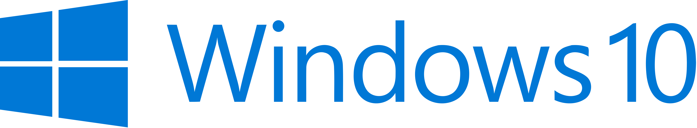 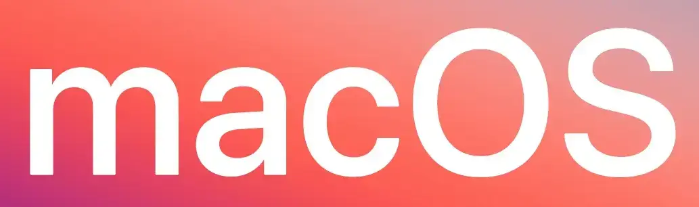If your torrent client dissapears, it most likely got purged by Windows Defender or another antivirus program. You can exclude the program from virus scans. Also, you don't need another antivirus, I promise you that.
Best Torrent Client
All clients use the BiTorrent protocol.
You can use qBittorrent plugins for quick and easy search of media.
Alternatives

Best VPNs
Best & Alternative VPNs state that they do not keep logs, Mullvad VPN scenario.
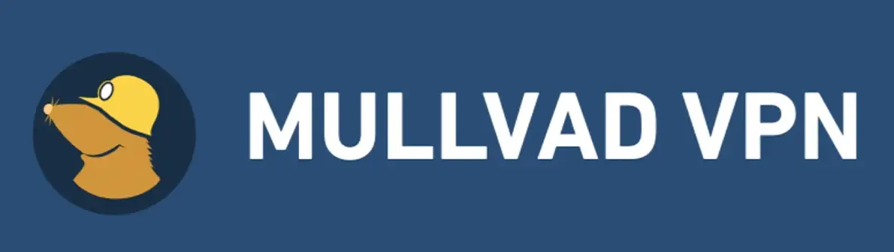r/VPNtorrents recommends using these for a reason.
Mullvad has discountinued Port Forwading. Which can lead to slower download and upload speeds (It will still work).
Alternatives
Only use these VPNs if you cannot get access to the above. Bonus: Why not XYZ VPN?
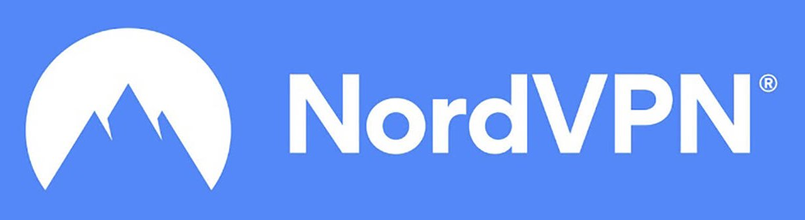 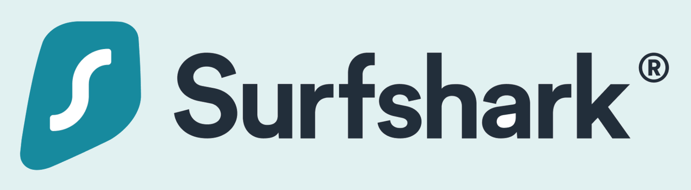Keep in mind that you should do your research for each VPN and see which one sticks!
Bind qBittorrent Client With VPN
- Open qBittorrent
- Go to “tools” on the top left
- Click on “Preferences”
- Click on “Advanced”
- Select “Network Interface”
- Select the name of your VPN (wg-mullvad if you use Mullvad)
- You are done!
Detailed guide can be found here!
Ensure Torrent Client Is Bound With VPN
Get Your Primary Device Ready (Computer)
- In your primary device, turn on your VPN
- Visit ipleak.net
- Scroll down and find "Torrent Address Detection"
- Click “Activate”
- Click “this Magnet Link”
- Choose your Torrent Client
- Click “Open Link”
- Torrent client opens a setup download window. Just click “OK” for now, as you are not dowloading a file that should go inside a “Torrents” or “qBittorrent” folder
- Go back to your browser and wait 10 seconds
- Check your "Torrent Address" is the same as"Your IP Addresses", at least one of those should be the same (IPv4 and/or IPv6)
Get Your Secondary Device Ready (Smartphone)
- Turn on your smartphone or another computer
- Connect your secondary device to your Network by Wi-Fi or Ethernet
- Disable any VPN connections you have on your secondary device
- Visit DuckDuckGo
- type “ip address” in the search bar
- Confirm your device's IP address is different from your computer's IP address
- You are finished! If not, go to step 8
- If this is false or both devices have the same IP address, check your main device's VPN app status.
Getting Started with Piracy
Piracy websites
Approved by Redditors - r/Piracy MegaThread
Anything - 1337x
Movies - YTS
Movies High Bitrate - TorrentGalaxy
Video Games - FitGirl Repacks
ROM files for Emulation - Vimms Lair
BIOS files for Emulation - Retroarch System
Japanese Content - The Index
Curated list of piracy links - Awesome Piracy
Websites to prove you are torrenting safely
IP Leak - Torrent Address Detection
Mullvad - Connection Check